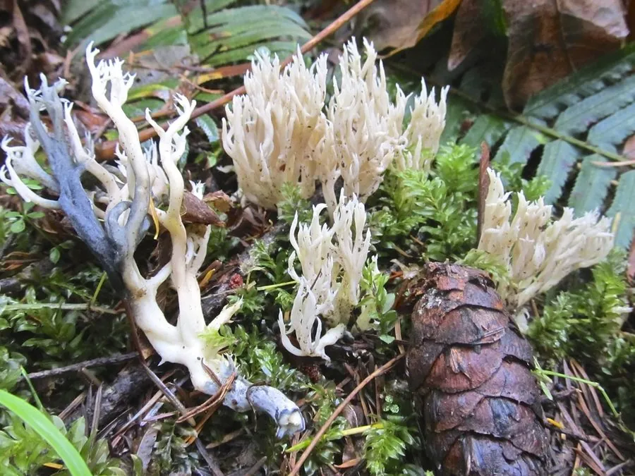

真菌 · 真菌界
冠锁瑚菌 Clavulina cristata

冠锁瑚菌的子实体呈白色分枝的珊瑚状，枝端分出细密的鸡冠状小齿，常成丛生于林地腐殖土上，可食但味道清淡。
- 分类
- 门担子菌门纲伞菌纲目鸡油菌目科锁瑚菌科属锁瑚菌属
- 栖息环境
- 阔叶林与针叶林的腐殖质土壤、落叶层，夏秋季群生
- 地理分布
- 温带地区广泛分布，中国各地林区常见
- 保护级别
- 暂无评估（IUCN 未评估，中国未列入重点保护名录）
物种志
冠锁瑚菌是担子菌门锁瑚菌科的真菌，子实体呈珊瑚状，高 3–8 cm，基部粗壮，向上多次分枝，分枝密集。整体颜色为白色、灰白色至淡灰黄色，基部常带污褐色。最显著的特征是枝端分裂成细密的鸡冠状或齿状小枝，像戴了一顶小小的王冠，因此得名“冠锁瑚菌”。菌肉白色、脆嫩，孢子印白色。
冠锁瑚菌生于阔叶林和针叶林的腐殖质土壤、落叶层上，夏秋季单生或群生，在温带地区广泛分布，中国各地林区常见。它靠分解土壤中的有机质生活，是林地中的腐生真菌。冠锁瑚菌可以食用，质地脆嫩、味道清淡，适合炒食或做汤，但必须充分加热；采集时要与外形相似的有毒珊瑚菌区分，拿不准的不要入口。它的分枝和冠状枝端是辨认的关键特征。
形态与习性
- 子实体珊瑚状，高 3–8 cm，多次分枝
- 颜色白色至灰白色，基部带污褐色
- 枝端分裂成鸡冠状或齿状小枝
- 孢子印白色
- 食用性可食，须充分加热
- 生境林地腐殖质土壤与落叶层
- 习性腐生，分解土壤有机质
趣味知识
- 冠锁瑚菌的枝端分裂成鸡冠状小齿，像戴了一顶小王冠。
- 它整体白色、分枝密集，是林地里辨识度较高的珊瑚菌。
- 冠锁瑚菌可以吃，但味道清淡，必须充分加热。
- 珊瑚菌类中有些种类有毒，采食前一定要确认种类。